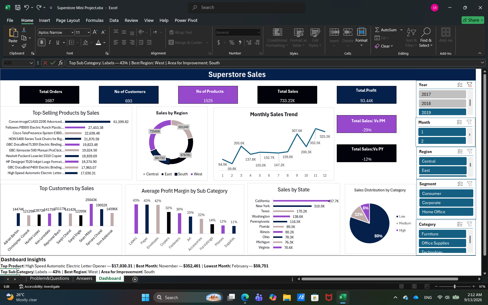
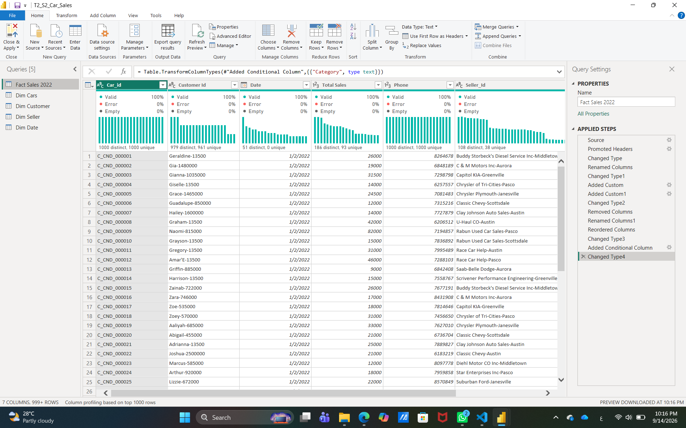
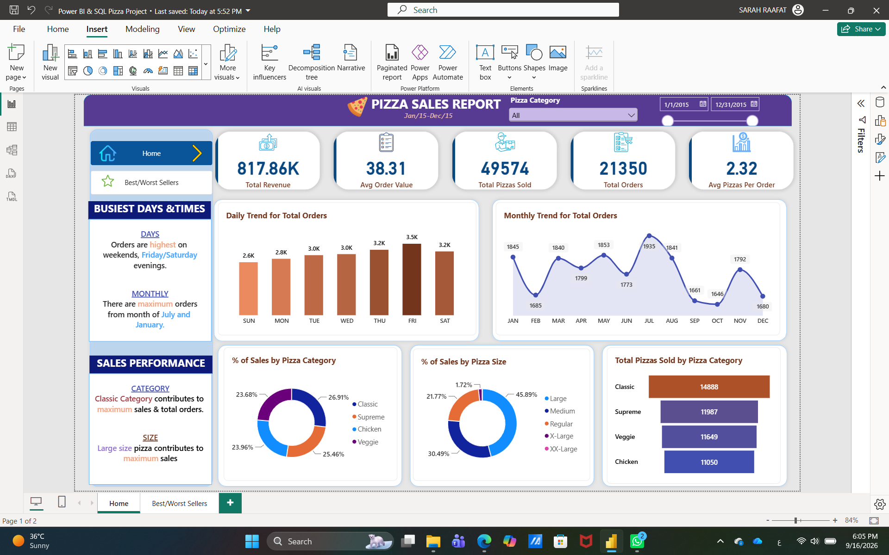
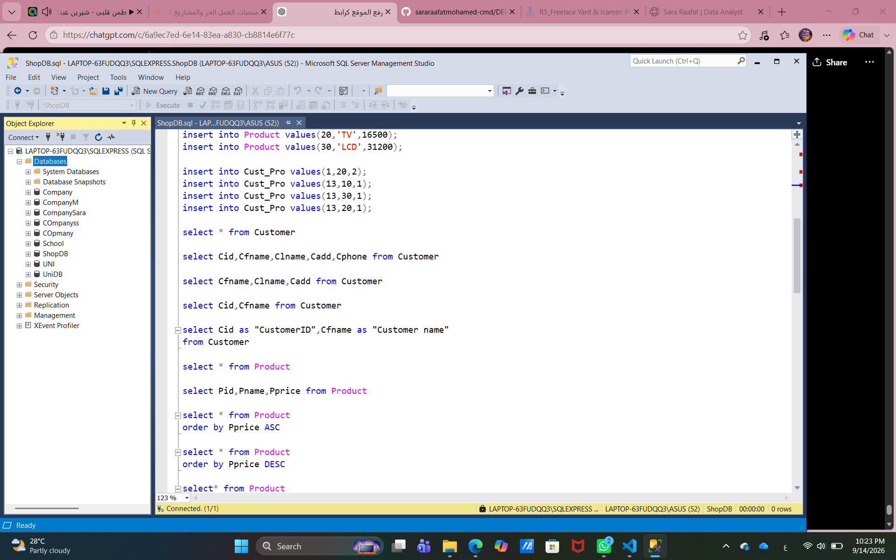
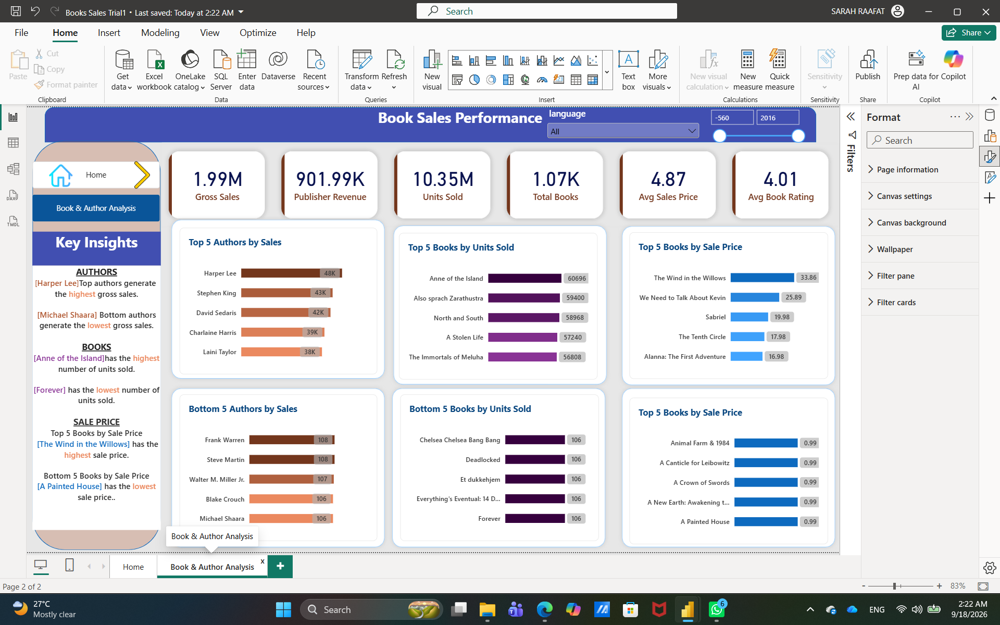

Business Information Systems student with a growing passion for turning data into meaningful insights. An interest in understanding how businesses use information gradually developed into a passion for data analysis and business intelligence.
Through data analysis training and hands-on learning, skills in Excel, SQL, Power Query, and Power BI have continued to grow. Curious and always eager to learn, with a goal of combining business understanding with data analysis to turn numbers into clear, useful insights.
I help small businesses and individuals make better decisions by turning raw data into clear, useful insights using Excel, SQL, Power Query, and Power BI.
Modern Academy
DEPI - Digital Egypt Pioneers Initiative
IT Gate
SMG

Data analysis project using Excel, Power Query, and Power Pivot. Built a structured data model and analyzed sales and profit performance through an interactive dashboard.
Tools: Excel, Power Query, Power Pivot
View Project
Data cleaning project completed during the DEPI initiative. Cleaned and structured multiple tables using Power Query and prepared the data for analysis.
Tools: Power Query, Power BI
View Project
End-to-end data analysis project using SQL Server and Power BI. Analyzed sales performance, product trends, and key business insights through an interactive dashboard.
Tools: SQL Server, Power BI
View Project
SQL project completed during IT Gate training. Designed a relational database for an electronics shop and worked with table relationships, filtering, aggregation, and joins.
Tools: SQL Server
View Project
Power BI data analysis project exploring book sales, ratings, authors, genres, languages, and publishing trends through an interactive dashboard.
Tools: Power BI, Power Query
View ProjectCleaning and preparing data for analysis.
Finding patterns and meaningful insights from data.
Creating organized reports and dashboards using Excel.
Building interactive dashboards and visual reports.
Turning complex data into clear visualizations.
Using SQL to query and analyze structured data.